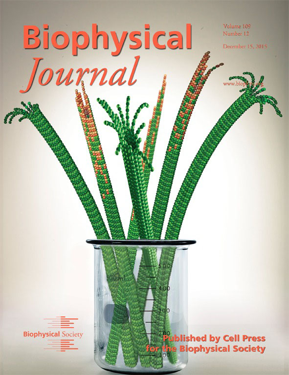

Ekaterina Grishchuk, PhD
Assistant Professor of Physiology
- - -
675 Clinical Research Building
415 Curie Boulevard
Philadelphia, PA 19104
215-746-8178
Lab: 215-746-8177
Fax: 215-573-2273
- - -
- - -
Grishchuk Lab Makes Biophysical Journal Cover
January 9, 2016
Cover picture: Molecular-dynamics simulations of microtubules reveal subtle changes in the conformation of elongating tubulin protofilaments—changes that lead to microtubule instability. Assembling tubulin subunits are associated with GTP molecules (orange), which subsequently hydrolyze to GDP (green), forming the ram’s horn geometry that promotes microtubule instability. For more information, see the article by Zakharov et al. on pages 2574–2591.
It’s a catastrophe! Highlighted on the cover, Ekaterina Grishchuk explains why in her article Molecular and Mechanical Causes of Microtubule Catastrophe and Aging, published in the Dec 15, 2015 issue of the Biophysical Journal (Biophys J. 109(12):2574-91)).
Access the article online here!